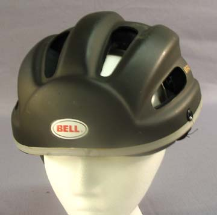
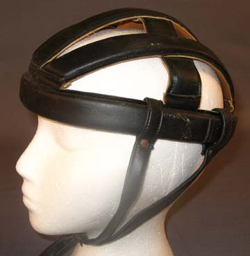

What Are Helmets?

A bike helmet helps minimize impact if a cyclist falls of there bike. ensuring that minimal trama or injury comes to that cyclist.
History

In the beginning, there were injuries. From cycling's earliest days there were head injuries. As more roads were paved it is likely that the head injuries increased, since macadam and asphalt are completely unforgiving as crash surfaces. In the 1880's high-wheel users in clubs saw that head injuries were a problem and began using pith helmets. Today we use helmets with lights, they are reflective and lined with comfy material.
Our top 10 Helmets
- {{#each this}}
{{Name}}{{/each}}